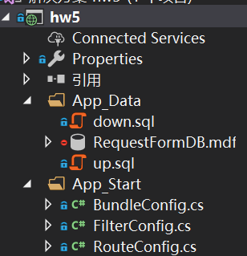
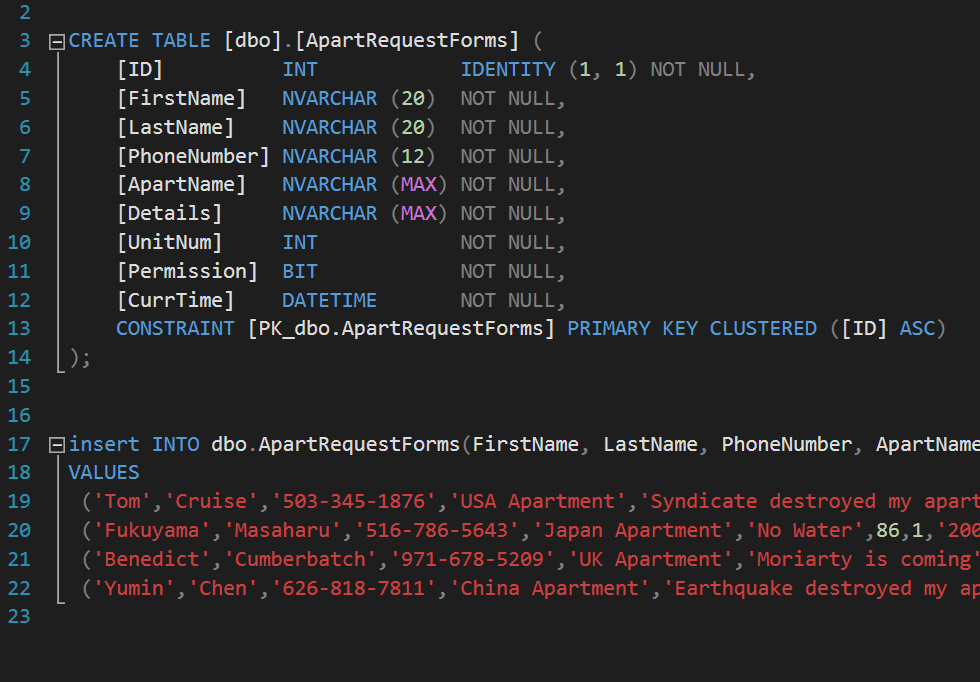
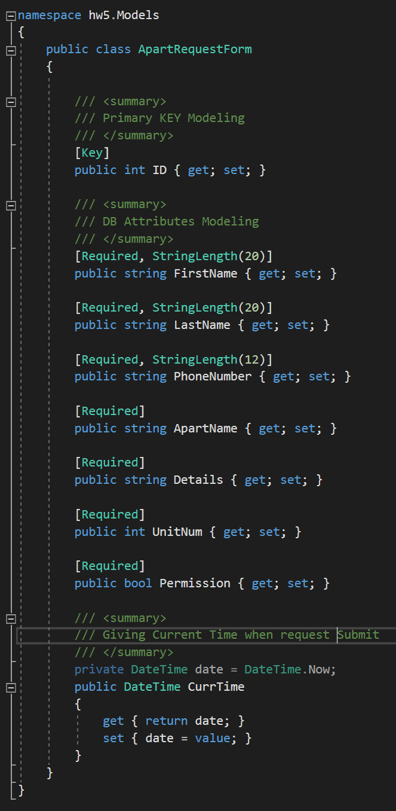
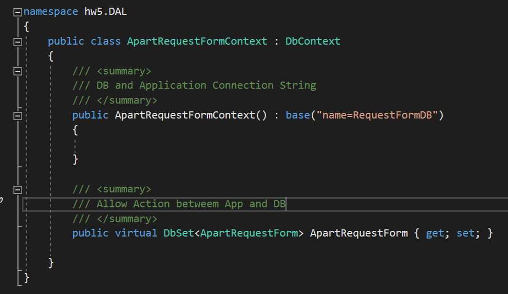
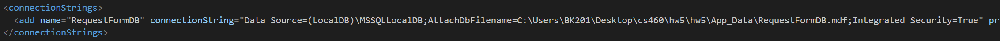
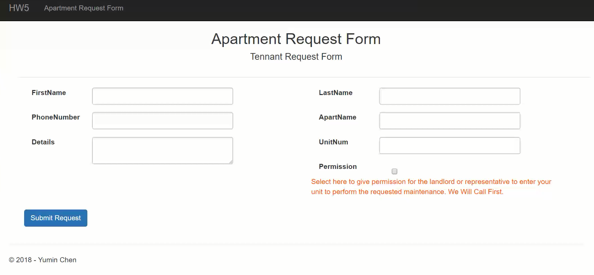
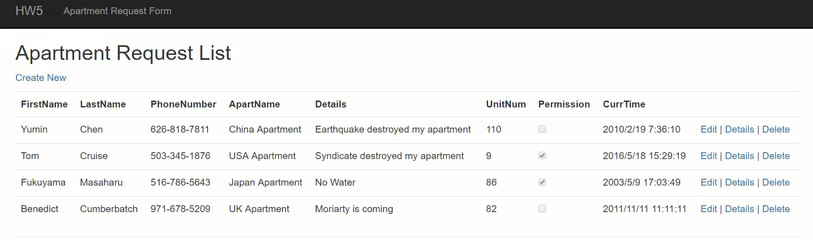

Yumin Chen, CS460, HW#5
The HW5 is about building a database-backed web application using ASP.NET MVC 5. Able to create and view the data from DB and display on the UI.
LocalDB has been installed in Visual Studio, create a new DB to use activite it. All the DB related file should under App_Data folder. Follow screenshot show the .mdf file:

After DB is ready, import the table and preset data using external T-SQL file, follow show the .sql file detail:

Model define the properties of the data that will be stored in the database, so the properties are based on the DB design. Follow show the Model class:

The DAL folder content DB context file, this file use to connect the DB and application. Also the DB need a "connectionString" to link with EF. Follow show the detail:


The user UI will show the textarea for user to input the require information. After submission, the page will redirect to the list page show all the current request as a table. Follow show the UI:

By default, the list page should also show the preset data from DB.
